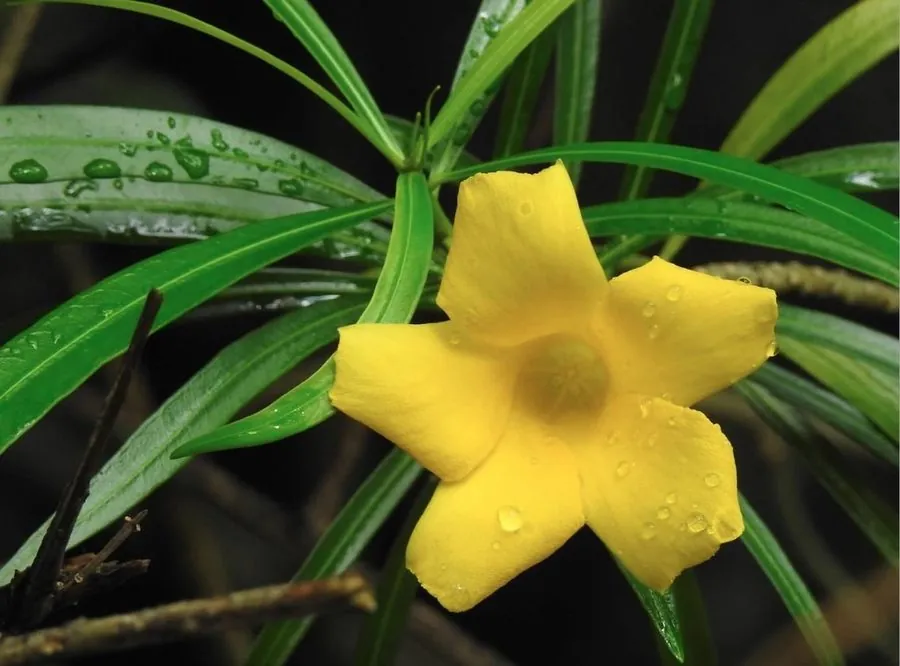

灌木与花木 · 植物界
黄花夹竹桃 Thevetia peruviana

夹竹桃科黄花夹竹桃属常绿灌木，花冠黄色漏斗状似酒杯，全年零星开花，但全株有毒，观赏时切勿误食。
- 分类
- 门被子植物门纲木兰纲目龙胆目科夹竹桃科属黄花夹竹桃属
- 栖息环境
- 热带亚热带庭园与路旁，喜高温、阳光充足，耐旱不耐寒
- 地理分布
- 原产秘鲁、墨西哥等热带美洲；中国广东、广西、福建、海南、云南、台湾栽培
- 保护级别
- 暂无评估；中国未列入国家重点保护野生植物名录
物种志
黄花夹竹桃为夹竹桃科黄花夹竹桃属常绿灌木，高二至五米，树皮灰褐色，分枝柔软下垂。叶片互生，革质，线状披针形，全缘，表面深绿有光泽。花单生或数朵组成聚伞花序，花冠黄色，漏斗状，形似酒杯，花期五月至十二月；核果扁三角状球形，成熟时黑色，果期秋冬季。
黄花夹竹桃原产秘鲁、墨西哥等热带美洲地区，中国广东、广西、福建、海南、云南、台湾等地有栽培。它喜高温、充足阳光和排水良好的土壤，耐旱、耐瘠薄，不耐寒。花黄色醒目、花期长，是南方庭园和道路绿化的观花灌木；种子可榨油制皂。需要注意的是，全株含强心苷类毒素，茎汁、种子和花均有毒，误食会引起心律失常，栽培和修剪时应避免接触汁液。
形态与习性
- 株高2–5 m，分枝柔软下垂
- 花期5–12 月，花黄色漏斗状
- 果期秋冬季，核果黑色
- 光照喜光，全日照开花更好
- 水分耐旱，忌长期积水
- 土壤疏松排水良好的壤土
- 主要用途庭园观花，种子可榨油
趣味知识
- 黄花夹竹桃的花冠呈漏斗状，像一只只黄色小酒杯，因此又名酒杯花。
- 它全株含强心苷，误食种子或茎汁可能危及生命，只能观赏不可入口。
- 黄花夹竹桃耐旱耐瘠薄，在南方海滨和道路绿地中表现良好。